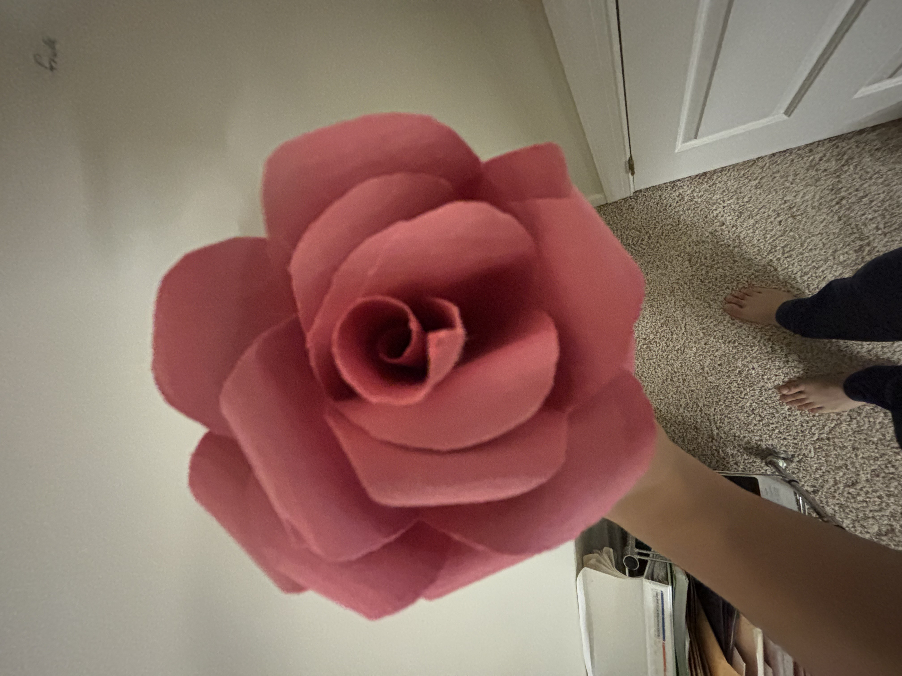
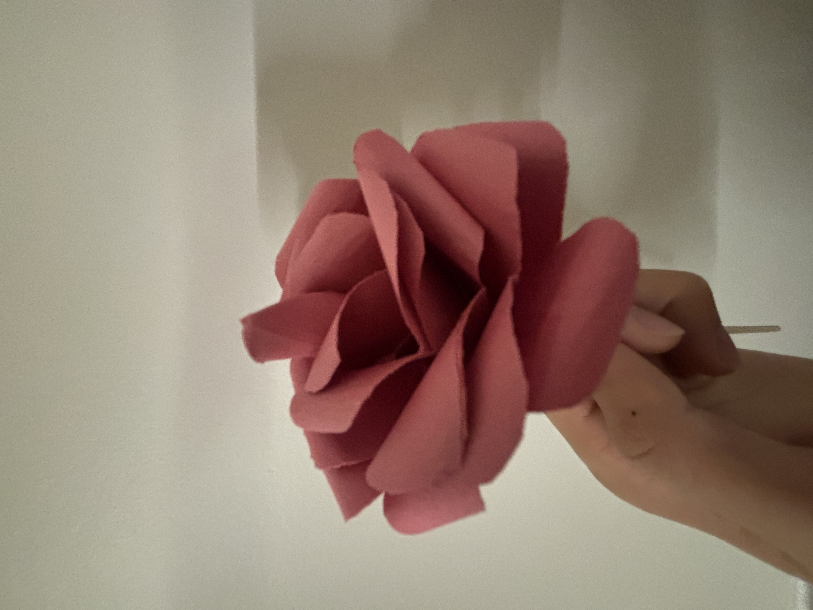
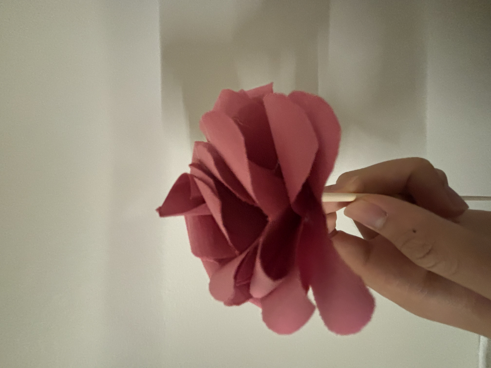

figure 1. gallery of moomins
click me to read!! --->
dear melody,
happy birthday! 18 years is a long time, and I'm glad that I could spend even a fraction of that time with you. sometimes I wonder what it would've been like if I never got into rsi, or if we got different labs, or if we had never called the week afterwards to talk about our feelings for one another, because it means that I never would've gotten to cherish 4am calls and college app essay co-parenting and artsy gifts and instagram reels banter and certified lock in sessions and basketball yaps and so so much more. it's easy to take things for granted but you've helped me slow down and think and truly feel what it's like to have someone that cares, someone that makes the day brighter.
ur the sweetest, kindest, and most heartwarming person that I know. and that comes out of the bottom of my heart -- whether it's a loving voice memo when i'm tired and in need of positivity on a wednesday morning, or the way you project ur passions fervently yet kindly with roblox games and the good place and moomin propaganda. ur emotional depth that goes along with it is truly beautiful as well -- i love how you feel happiness and sadness and joy and anger and are so so human, yet under all of that is a constant source of love, a constant that i can trust. i'm truly thankful to have you as my girlfriend, because you are uniquely melody, and i couldn't ask for anyone better.
adulthood is scary and there are so many things on the table that I don't even have to name. but from watching u present flawlessly at rsi and put up with bowen yang slander and prevailing through capps and cc sessions and finding resilience with mirabelle and ryan... the list goes on... ur so incredibly strong and i'm super glad that i'll be on the journey to see you do great things as an all-encompassing human, companion, and girlfriend. (and I enjoy being the occasional homework assignment do-er or the emotional yap/vent sponge so it goes especially well hand-in-hand with u.)
I hope you enjoy this little website I made for you. it's the least I could give to you, not just for turning 18, but also to symbolize how much u make my day-to-day life a better one to live in.
here's to lots more yaps and cuddles and study sessions and invaluable memories! happy birthday, melody!
with unrequited love,
jason ❤️
figure 1. gallery of moomins
40 awesome things about you:
YAY!!! YAY!!! YAY!!!
some things to help u ~ride the stride~ are:
happy playlist?!
enjoy this playlist of some upbeat energetic songs!! genres r fairly mixed but hope u enjoy nonetheless: ❤️🎵
spinning cat
enough said. enjoy this spinning cat.
red rose
yayayay take this red (paper) rose! (shadows r bad sorry 😭)
  i'm sorry to hear that. i'm always here to talk and i hope things go better soon 🙏🙏
i wanted to dedicate to u my piano cover of d4vd here with me. hope it makes u feel a little bit better
u cutie 🥺 here r some date ideas:
boston area full-day date
dc area afternoon/evening
ur welcome to take the jason-melody quiz!!
first, answer all the "jason" boxes and compare them to the answer key to see how well you know jason.
then, answer all the "melody" boxes and click submit and see how alike we are!
the score is probably gonna be really low oops but enjoy the questions...
this is the place for other emotions. or for other random things that jason wanted to share. enjoy!!
horny?
no, i'm NOT sharing on a public website lol. take this link instead hehe: for melody's eyes only 🙈
want to hear a yap?
here u go!
hello so today I will be talking to you more about the wizards.
basically we have won 7 out of the 15 games which is very very good for a team that used to win 15% of their games. and it’s all due to the rookies ok there r a few names
bilal coulibaly ok this guy is the guy that i have mentioned before because hopefully he will be the front face of our team in the future holy shit he had this crazy dunk last game let me find it ok it’s here
but there’s that guy and then this year we picked up three more people their names are alex sarr (he’s french) bub carrington (guess what he’s from maryland) and kyshawn george (he has a crazy afro lol). they r all decently good but they’ve gotten so much better from the beginning of season when we were like 5 wins 35 losses or some embarrassing shit and now we r 13 wins 48 losses which is better!!!
wizards r kindof the laughingstock of the nba rn which is sad. all the teams that ppl like r the popular ones like the lakers or the warriors or the celtics (ryan razon is a fan of the celtics and they are in boston so plan is to hit up games maybe during uni but also since the celtics r good the tix are expensive af like $200 for seats where u can barely see the ball cuz they so far away from the court ok anyway)
wizards win makes me so happy it is one of thee most happiest things that can happen in jason’s life
i read somewhere that women don’t like when men talk ab sports and that might be true so this yap might be boring but jason likes it so jason will yap ab it and melody can read or not read if she wishes
we (i refer to the wizards as we and it's really cute how u've picked up on that lol) had our glory days in 2016-17 so like fourth fifth grade when basically john wall (the super cracked dude he’s not on the team anymore now) was goated and also this guy named bradley beal (if john wall is melody crackedness then bradley beal is like jason crackedness is a good skill comparison) helped lead the team to 4th place out of 15 teams in the eastern conference which is pretty damn good. And then we went to the playoffs and we won the first round and then we were one game away from winning the second round against the celtics. Each playoff round is 7 games and game 6 was the best game to watch in my life so i return to this youtube video at least once every few months just to reminisce
so basically the wizards r a part of my soul and even though we’re ass and nothing like before i still like them so so much if there are 1000 wizards fans i’m one of them if there are 10 wizards fans i’m one of them if there are 1 i’m that fan if there r 0 i’m dead ok byebye
or perhaps a video yap? crazy ik